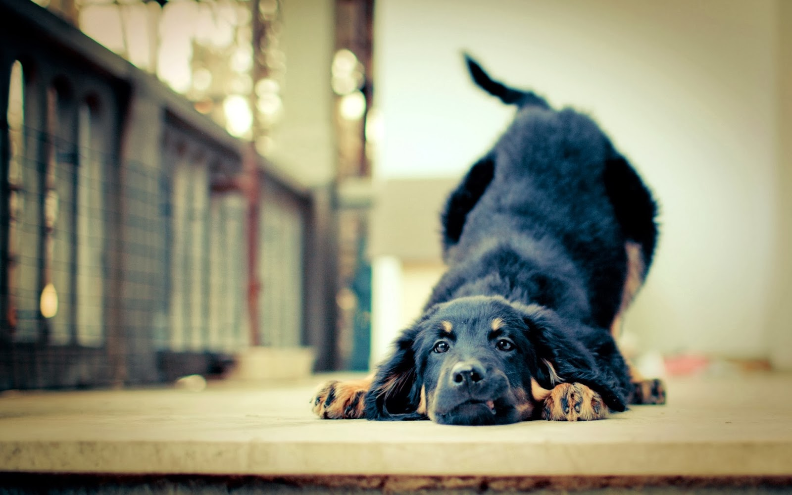

EL 70% DE LOS ESPAÑOLES SE INCORPORAN DOLORIDOS Y SUDANDO TRAS SACAR UNA BUENA FOTO
Agacharse y adoptar una postura incómoda forzando glúteos y piernas a fin de poder sacar una foto frontal del perro que poder compartirla en las redes sociales es ya el único ejercicio físico que realizan los españoles, según se desprende de un estudio publicado esta mañana por el Instituto Nacional de Estadística (INE).
Según el estudio, es habitual que los españoles se incorporen rojos, sudando y algo mareados tras haber pasado unos minutos en cuclillas inmortalizando a su mascota.
“Haciendo fotos chulas se hacen un mínimo de 15 sentadillas, se adoptan posturas forzadas que permiten ejercitar los brazos, el equilibrio y la elasticidad”, explica Jorge Cárpato, experto en salud y bienestar del Instituto Portra. “Agacharse como una alimaña indigna, estirar los brazos hasta que duelan un poco e incluso dar algunos pasitos para corregir la composición conforman el 90% de los ejercicios que un español puede llevar a cabo para entrenar sus músculos”, dice, asegurando que utilizar una tablet en vez de un móvil permite muscular un 30% más los brazos, aunque conviene hacer estiramientos.
En este video podemos comprobar el esfuerzo físico y el ejercicio que se hace. Por expertos.